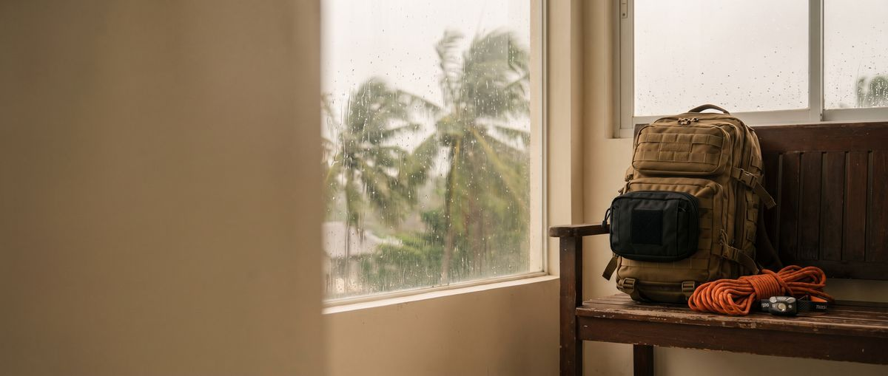

The KIDAN 72 System
Gear, records, drills and people, working as one.
KIDAN Database
Know what you have. Know where it is. Know whether it is ready.

| Identification | Serial number, owner or family profile, bag type |
|---|---|
| Inventory & Expiry | Itemised contents, quantities, food and medicine expiration dates |
| Status Monitoring | Battery and charging health, inspection history, maintenance records |
| Logistics & Emergency | Replacement dates, optional tracker information, emergency contacts |
| Training Records | Completed modules and drill participation history |
Family System
Everyone knows their part before the alarm sounds.

Emergency Meeting Point
One designated safe location inside the neighbourhood and one outside it.
Evacuation Routes
A primary and a secondary path out of the area, walked in advance.
Communication Strategy
Primary and backup channels, plus a written emergency contact list.
Roles & Special Care
Individual responsibilities, with arrangements for children, the elderly, family members with special needs, and pets.
Asset Protection
Secured documents, and everyone knows how to shut off water, gas and electricity.
Family Drill
Run it at least twice a year, once at night. Time it and debrief.
Typhoon System
One sequence: before, during, after.

Flood System
The most underestimated hazard.

- Monitor official weather warnings
- Prepare and inspect the KIDAN Go-Bag
- Fully charge all power banks and devices
- Elevate electronics, furniture and valuables
- Secure critical documents in waterproof casings
- Pre-identify clear evacuation routes
- Leave early when local authorities advise evacuation
- Avoid wading or moving through floodwater
- Stay clear of submerged electrical hazards and power lines
- Never assume floodwater is safe or uncontaminated
- Keep the Go-Bag completely dry
- Follow official LGU evacuation instructions
- Keep a continuous headcount of all family members
72-Hour Management
Three phases. Finite supplies.
Immediate Survival
Immediate safety, establish communication, secure a light source, consume immediate food and water, gather situational information.
Sustained Stability
Rationing and conservation, hygiene and sanitation, power bank preservation, family welfare checks.
Transition & Recovery
Extended self-reliance, reassessment of supplies, resupply or evacuation decisions, preparing for recovery.
KIDAN Community
Prepared people helping one another.

- Preparedness orientations and bag inspection drives
- Joint family and neighbourhood evacuation drills
- Community first-aid and radio communication training
- Local flood and typhoon simulation exercises
- Community resource mapping and post-disaster lessons-learned sessions
The KIDAN 72 Standard
One standard, from the bag to the people who carry it.
Physical Specs
Kit contents, ergonomic standards and durability testing.
Maintenance Framework
Inspection protocols, expiry tracking and inventory refresh cycles.
Human Capital
Standardised family drills, community networks and verified readiness scoring.